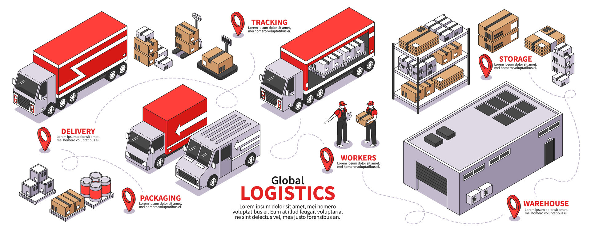
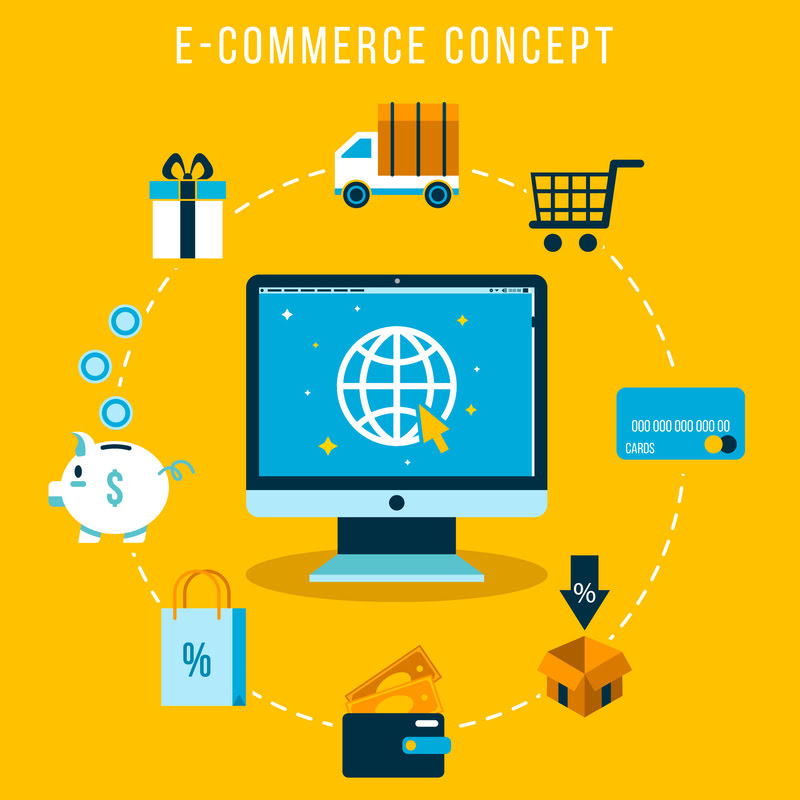
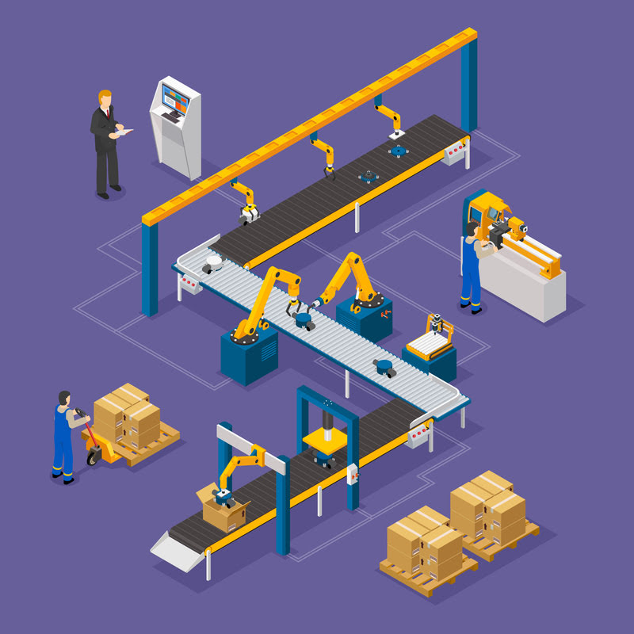
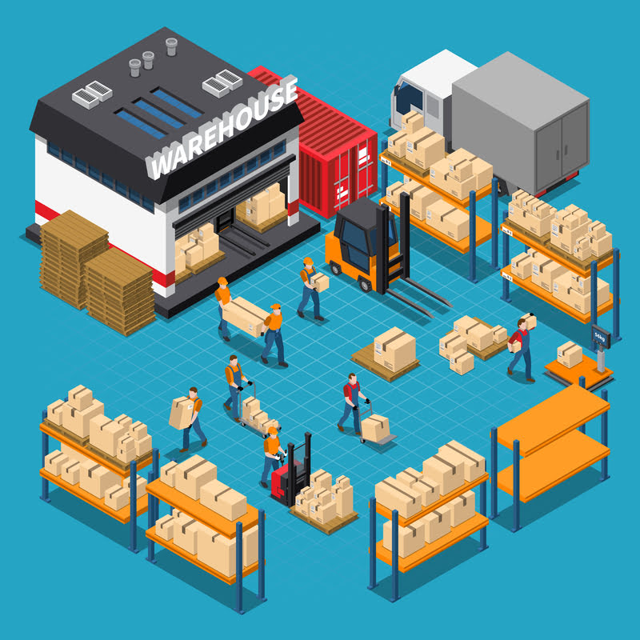
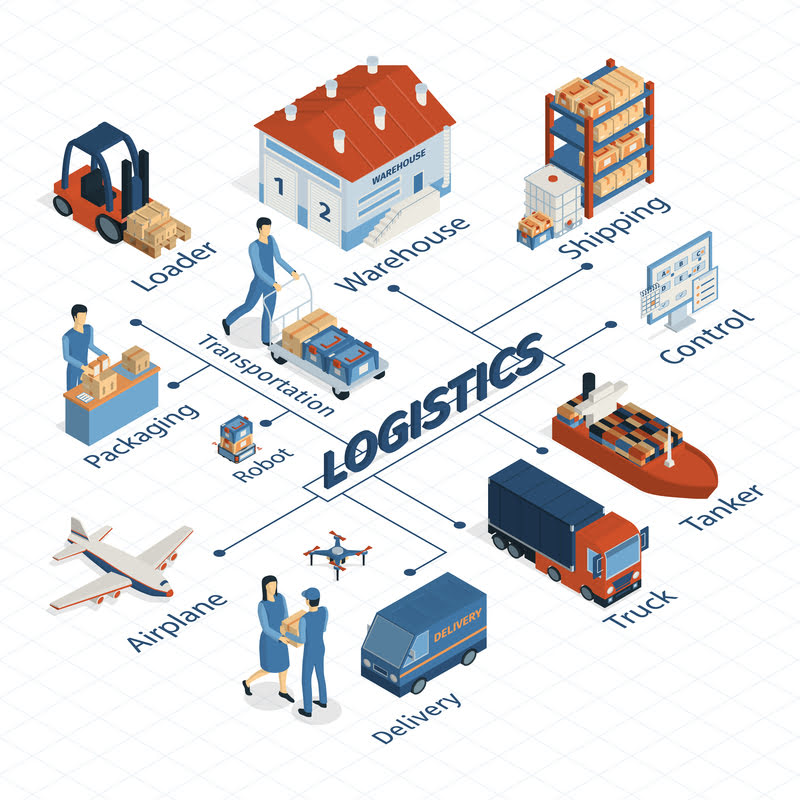
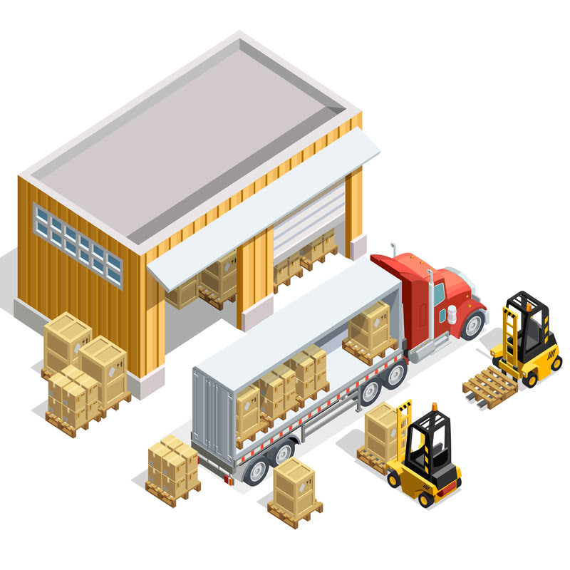

We provide stable and efficient forwarding services that cover all international transport modalities
from air, ocean, express and inland to multimodal transport.

View additonal contents with a global network of 56 hub locations in 36 countries, we directly
manage the
logistics operations from the origin to the final destination. By providing a single point of contact, you
can also
streamline the customer operation management.

E-COMMERCE
It is your bustling city center or brick-and-mortar shop translated into
zeroes and ones on the internet superhighway.
An estimated 2.14 billion people worldwide buy goods and services online, and the number of Prime
members shopping All
stores globally now tops 500 million.

PRODUCTION
The production process is an essential part of any business
The business production process has four main characteristics: extractive process, Analytical process,
fabrication
process, and synthetic process. The extractive process refers to the activities done in getting the
raw materials from
their source

WAREHOUSE
All benefits for uninterrupted supply to stores
Going online, opening stores and distribution centers, labeling and pre-sale preparation of goods,
confidential
acceptance from suppliers, smart picking and fast shipment to stores, freshness and quality
management, accounting for
seasonality and storage conditions, and robotization - we have a solution for any task.

LOGISTICS
Refers to the outsourcing of ecommerce logistics processes to a third party business
Third-party logistics refers to the outsourcing of ecommerce logistics processes to a third party
business, including
inventory management, warehousing, and fulfillment. Providers allow ecommerce merchants to
accomplish more, with the
tools and infrastructure to automate retail order fulfillment.

DISTRIBUTION
Includes all the decisions to optimize the process of dispatching goods to your sales points
Distribution logistics, also known as sales logistics, deals with the planning, realisation and
control of the
movementof goods. It's an inter-organisational logistics system, where the aim is to make the
logistics channel from the
supplier to the customer efficient – especially in terms of costs and performance.